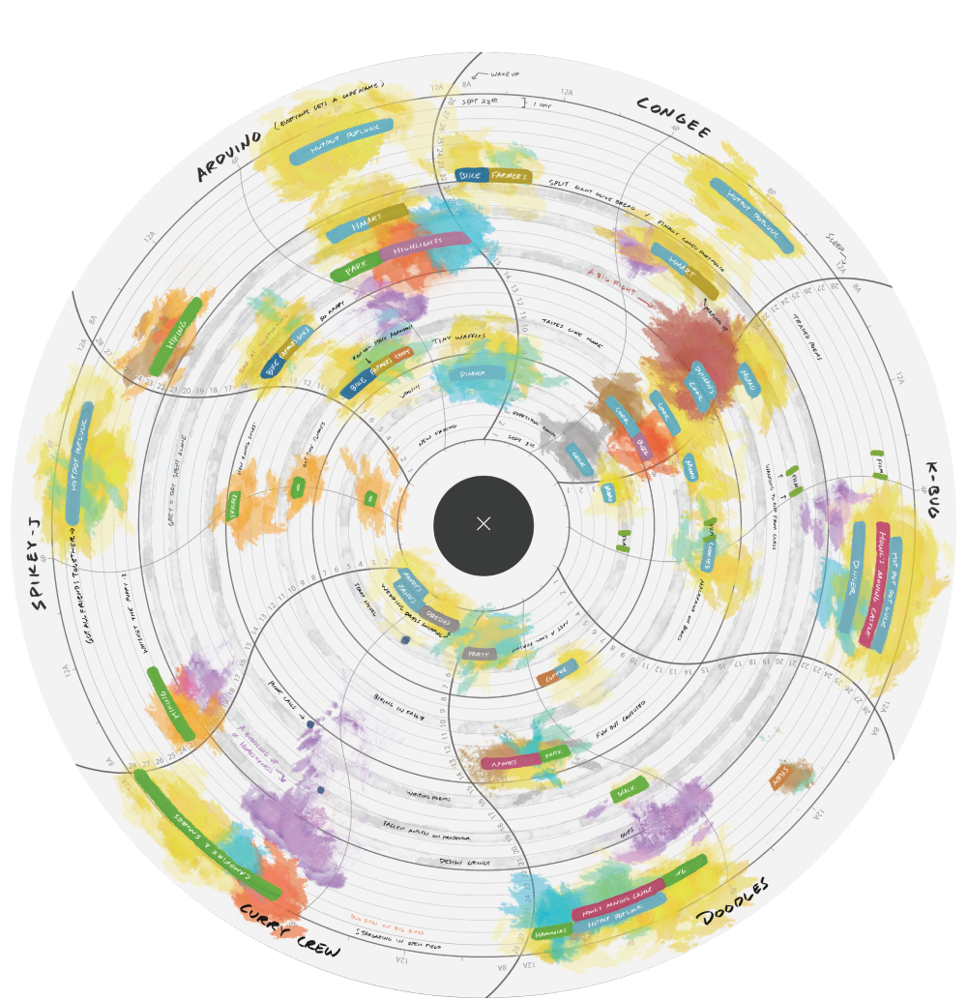
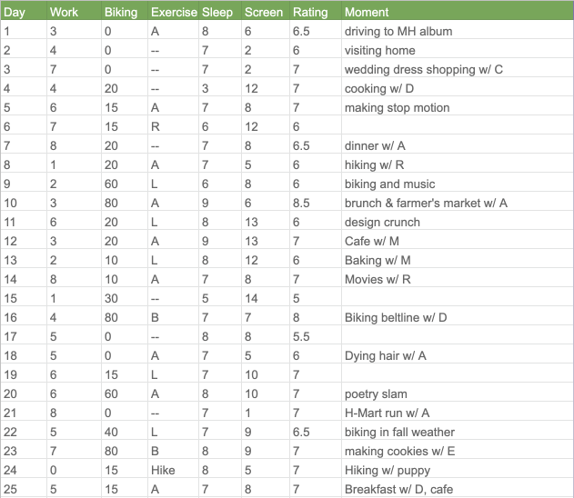
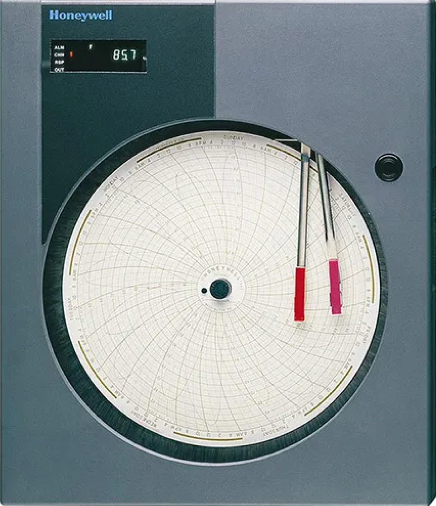
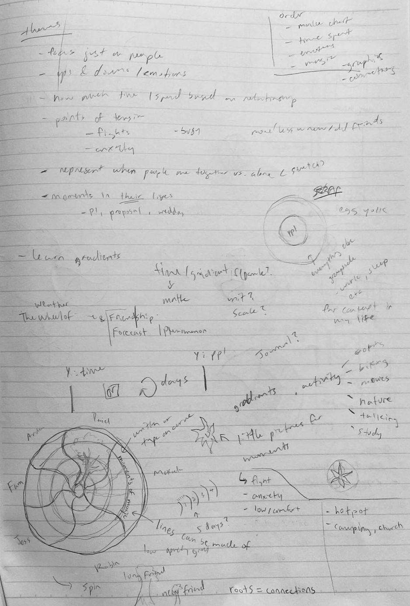
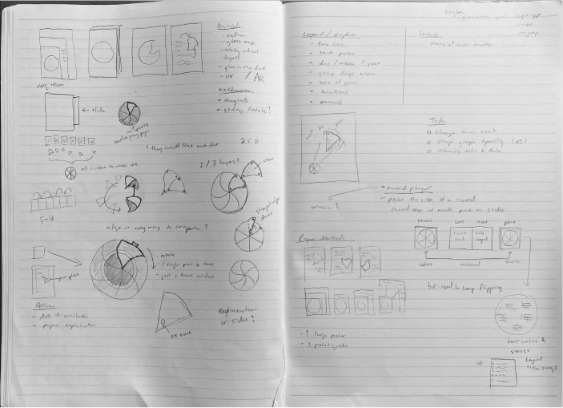
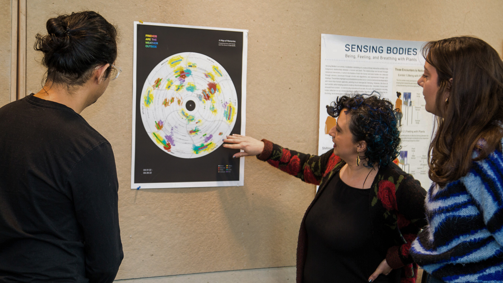
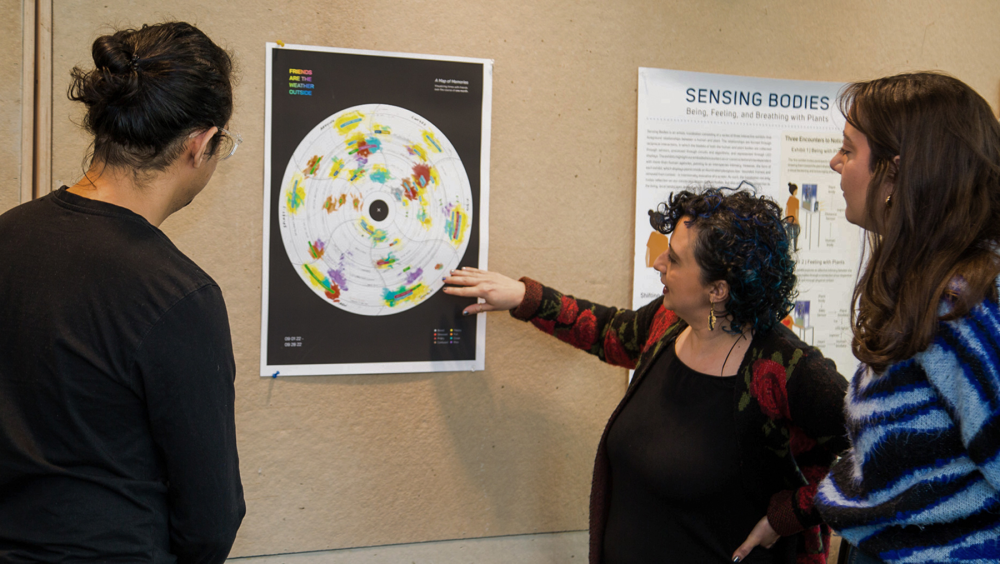

Memories as Data
Task
The challenge of this project was to collect personal data from day-to-day life and visualize it in some way. This data could be on any aspect of daily life and needed to include multiple variables. Using these records, we were tasked with creating a visualized “self portrait”.
Data Collection
Before choosing a specific topic to focus on, I decided to collect records from several disparate areas of my life to see what unexpected patterns might arise. This included data on exercise, sleep, screen time, time I spent on hobbies like cooking and biking, as well as an overall numerical rating for the day. Most of these numbers were collected from my calendar which keeps track of how I spend my time throughout the day. Lastly, I wrote down one memorable moment from each day, whether good or bad. This process was carried on over an entire month.
A section of the collected data
Research + Experimentation
I searched for a way to bring more story-telling to this data self
portrait. As I looked back over the data collected, I realized that
most of my favorite moments recorded from each day were related to
my friends. So that sparked the question: what if I just show the
time I spent with my favorite people?
Pivoting directions meant going back to the drawing board to
generate new ways of representing the data that I had. Using design
books as well as online resources, I tried finding inspiration for
novel ways of visualization that I have not yet experimented with. I
was especially influenced by the book Dear Data by Giorgia Lupi and
Stefanie Posavec and the generous honesty of their visualizations of
daily life.
Stefanie Posavec and Giorgia Lupi, 2016
While on a break away from this project, I stumbled upon an image a device used for charting temperature and humidity. Enamored by the chart’s aesthetic pattern and its potential for data visualization, I decided to use it as the base for my self portrait.
DR4500 Truline Circular Chart Recorder, Honeywell
This draft came out rather spontaneously as I played with the limitation of using the base graph. I split the ellipse into six pieces, each representing a friend with each round row as a unit for one day. I drew from the original data to record the time I spent with people each day and the activity, as well as including the good / bad moments as written snippets. I wanted to move away from simply showing time as numerical, so I tried using paint to represent emotions that surround each time snippet.
Through this experimentation, I began to think of this graph as a representation of my memories. The inside of the circle starts on the first day of the month (when I started recording the data) and it expands outward to the end of the month. This pattern contributed to the meaning of the piece as days farther away from the present start to fade in memory and invoke a sense of the cyclical nature of our days.
Refinement
From critiques, it was clear that the mission at this point in the process was finding how to present the portrait to an audience and the considering the various questions that brings:
- What information methods should be used to convey the data (legends, pointers ...)?
- What forms of print media would best communciate the content (poster, booklet ...) ?
Using sketching and rough paper prototypes, I experimented with different ways of representation: exploring ways of segmenting, layering, zooming in, drawing attention to...
In the end, I decided to follow advice from critiques of keeping focus on the poster itself and letting the audience linger on it, exploring it on their own terms.
Final Product
 

Photo credit: Joshua Smith